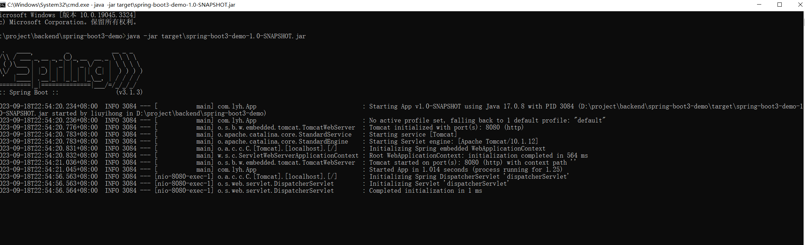
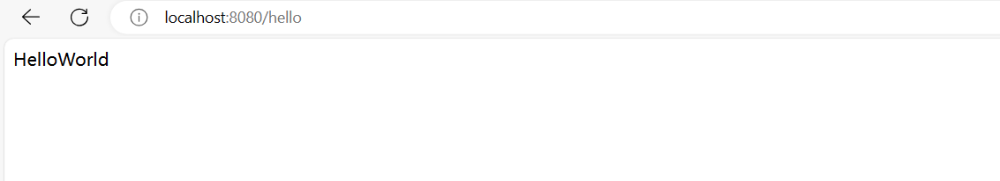

快速入门
一、前提
1.1、SprintBoot 使用版本
1.2、软件环境
1.3、学习链接（尚硅谷 - 雷丰阳）
二、SprintBoot 入门
1.1、是什么？
- SpringBoot 可以简单、快捷的创建一个 独立的、生产级别的 Spring 应用。
- 底层是 Spring。通过简单的配置可以快速使用 Spring 以及 第三方技术。
1.2、有啥用？
- 简化开发
- 快速创建 Spring 应用程序
- 简化整合
- 提供各种 starter、简化应用整合。
- 简化配置
- 按需自动加载 Spring 以及 第三方库，有默认配置（可修改）。
- 简化部署
- 内嵌 tomcat、jetty 等 servlet 容器，可以直接运行 jar 包。
- 简化监控、运维
- 提供 监控指标、健康检查、外部化配置 等生产级别的特性。
1.3、怎么用？ （举例：构建一个 HelloWorld 的 web 应用程序）
- 构建一个 maven 项目
mvn archetype:generate -DgroupId=com.lyh -DartifactId=spring-boot3-demo -DarchetypeArtifactId=maven-archetype-quickstart -DinteractiveMode=false
- 修改 pom.xml，添加 parent
- 所有 SpringBoot 项目都必须继承自 spring-boot-starter-parent
<parent>
<groupId>org.springframework.boot</groupId>
<artifactId>spring-boot-starter-parent</artifactId>
<version>3.1.3</version>
</parent>
- 修改 pom.xml，引入 web starter
- SprintBoot 支持各种 starter，使用 starter 可以快速引入、配置相关依赖
<dependencies>
<dependency>
<groupId>org.springframework.boot</groupId>
<artifactId>spring-boot-starter-web</artifactId>
</dependency>
</dependencies>
- 修改主程序类（main 入口）
- spring-boot3-demo\src\main\java\com\lyh\App.java
- 类名上追加 @SpringBootApplication 注解
- main 方法内部调用 SpringApplication.run(App.class, args);
package com.lyh;
import org.springframework.boot.SpringApplication;
import org.springframework.boot.autoconfigure.SpringBootApplication;
@SpringBootApplication
public class App {
public static void main(String[] args) {
SpringApplication.run(App.class, args);
}
}
- 追加业务类
- spring-boot3-demo\src\main\java\com\lyh\controller\HelloWorldController.java
package com.lyh.controller;
import org.springframework.web.bind.annotation.GetMapping;
import org.springframework.web.bind.annotation.RestController;
@RestController
public class HelloWorldController {
@GetMapping("/hello")
public String hello(){
return "HelloWorld";
}
}
-
运行 SprintBoot 的方式
- 通过 maven 运行 SprintBoot （mvn spring-boot:run）
- 通过 maven 编译成 jar 包后，再运行 jar 包 （此处采用此方式）
-
修改 pom.xml，引入 maven plugin
<build>
<plugins>
<plugin>
<groupId>org.springframework.boot</groupId>
<artifactId>spring-boot-maven-plugin</artifactId>
</plugin>
</plugins>
</build>
- 完整 pom.xml
- 确认 pom.xml 中 packaging 为 jar
<project xmlns="http://maven.apache.org/POM/4.0.0" xmlns:xsi="http://www.w3.org/2001/XMLSchema-instance"
xsi:schemaLocation="http://maven.apache.org/POM/4.0.0 http://maven.apache.org/maven-v4_0_0.xsd">
<modelVersion>4.0.0</modelVersion>
<parent>
<groupId>org.springframework.boot</groupId>
<artifactId>spring-boot-starter-parent</artifactId>
<version>3.1.3</version>
</parent>
<groupId>com.lyh</groupId>
<artifactId>spring-boot3-demo</artifactId>
<packaging>jar</packaging>
<version>1.0-SNAPSHOT</version>
<name>spring-boot3-demo</name>
<url>http://maven.apache.org</url>
<dependencies>
<dependency>
<groupId>org.springframework.boot</groupId>
<artifactId>spring-boot-starter-web</artifactId>
</dependency>
<dependency>
<groupId>junit</groupId>
<artifactId>junit</artifactId>
<version>3.8.1</version>
<scope>test</scope>
</dependency>
</dependencies>
<build>
<plugins>
<plugin>
<groupId>org.springframework.boot</groupId>
<artifactId>spring-boot-maven-plugin</artifactId>
</plugin>
</plugins>
</build>
</project>
- 使用 maven 编译为 jar 包
mvn clean install
- 执行 jar 包，默认启动端口号为 8080 的服务
- spring-boot3-demo\target\spring-boot3-demo-1.0-SNAPSHOT.jar
java -jar target\spring-boot3-demo-1.0-SNAPSHOT.jar

- 访问 http://localhost:8080/hello 输出 HelloWorld，即 web 应用构建成功 
1.4、分析
-
简化开发。
- 无需编写 SSM 所需的 xml 配置文件，直接开发业务。
-
简化整合
- 引入 web starter，直接整合了 SSM 服务。
- SprintBoot 官方提供的 starter
官方提供的 starter 命名格式为:
spring-boot-starter-*
第三方提供的或者自定义的 starter 命名格式为:
*-spring-boot-starter
-
简化配置
- 引入 starter 后，有默认配置，可直接使用。
- 若要修正配置，可以在 src\main\resources 目录下通过 application.properties 或者 application.yml 文件修正。
- SprintBoot 官方提供的 starter 配置
-
简化部署
- maven 编译成 jar 包后可直接运行，无需编译成 war 包再放到 tomcat 的 webapps 中。
-
简化监控、运维
- 提供 监控指标、健康检查、外部化配置（可在外部指定 application.properties 或者 application.yml 用于覆盖 jar 包中的配置）。
1.5、初始化 SpringBoot 项目的方式
- maven 命令行
- Spring Initializr
- IDE 工具（Eclipse、IDEA 等）,此处省略